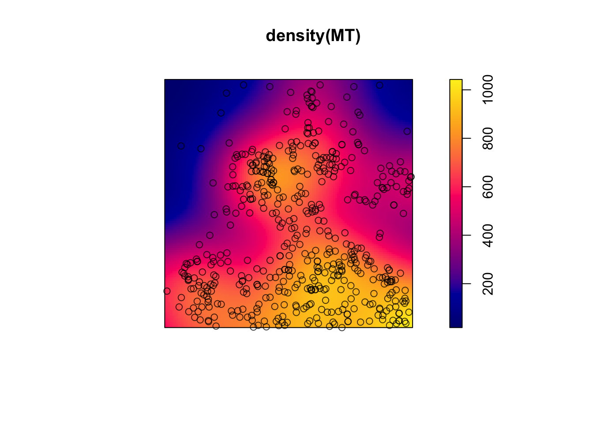
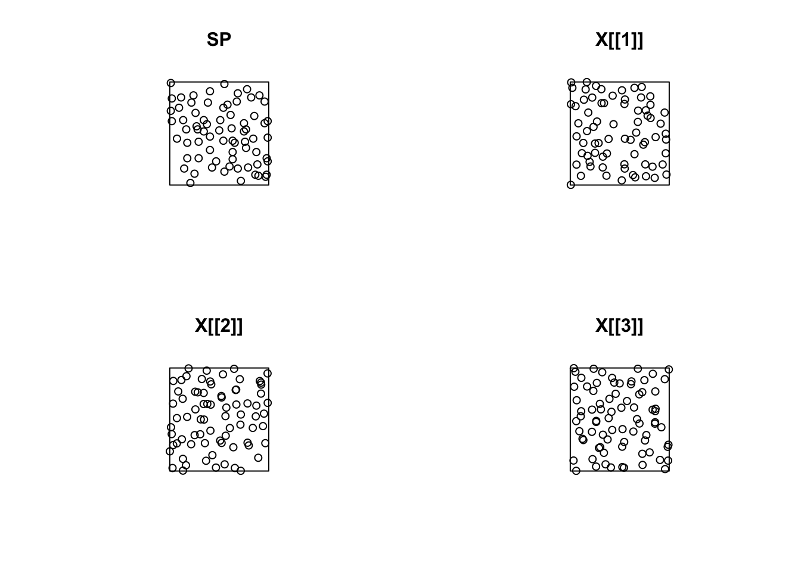
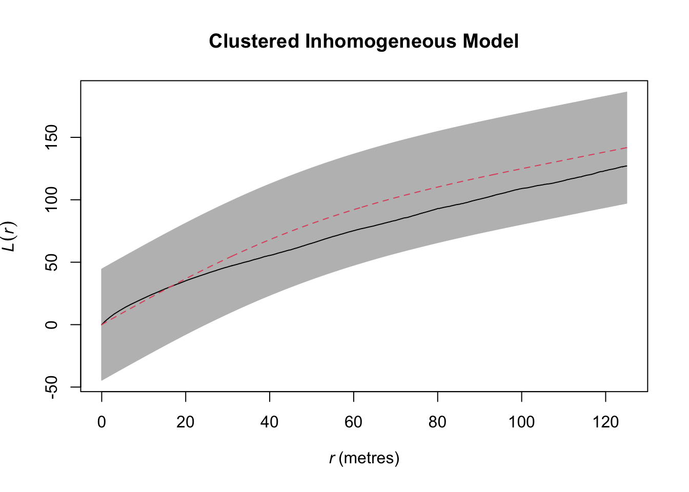

Thursday November 3, 2022
“Sometimes it pays to stay in bed on Monday, rather than spending the rest of the week debugging Monday’s code.” - Christopher Thompson
Today
- Fitting and interpreting a cluster model
- Assessing how well the model fits
- Spatial logistic regression
Fitting and interpreting a cluster model
Let’s compare the inhibition model fit previously to describe the Swedish pine saplings data with a cluster model for describing the Lansing Woods maple trees (in the ppp object called lansing from the {spatstat} package).
Start by extracting the events marked as maple and putting them in a separate ppp object called MT.
suppressMessages(library(spatstat))
data(lansing)
summary(lansing)## Marked planar point pattern: 2251 points
## Average intensity 2251 points per square unit (one unit = 924 feet)
##
## *Pattern contains duplicated points*
##
## Coordinates are given to 3 decimal places
## i.e. rounded to the nearest multiple of 0.001 units (one unit = 924 feet)
##
## Multitype:
## frequency proportion intensity
## blackoak 135 0.05997335 135
## hickory 703 0.31230560 703
## maple 514 0.22834300 514
## misc 105 0.04664594 105
## redoak 346 0.15370950 346
## whiteoak 448 0.19902270 448
##
## Window: rectangle = [0, 1] x [0, 1] units
## Window area = 1 square unit
## Unit of length: 924 feetMT <- lansing |>
subset(marks == "maple") |>
unmark()
summary(MT)## Planar point pattern: 514 points
## Average intensity 514 points per square unit (one unit = 924 feet)
##
## Coordinates are given to 3 decimal places
## i.e. rounded to the nearest multiple of 0.001 units (one unit = 924 feet)
##
## Window: rectangle = [0, 1] x [0, 1] units
## Window area = 1 square unit
## Unit of length: 924 feetThere are 514 maple trees over this square region (924 x 924 square feet).
Plots of the tree locations and the local intensity function help you understand the first-order property of these data.
MT |>
density() |>
plot()
plot(MT, add = TRUE)
There are maple trees across the southern and central parts of the study domain.
A plot of the \(G\) function summarizes the second-order properties under the assumption of no trend.
library(ggplot2)
G.df <- MT |>
Gest() |>
as.data.frame() |>
dplyr::filter(r < .033) |>
dplyr::mutate(r = r * 924)
ggplot(G.df, aes(x = r, y = km)) +
geom_line() +
geom_line(aes(y = theo), color = "blue") +
geom_vline(xintercept = 18, lty = 'dashed') +
xlab("Lag distance (ft)") + ylab("G(r): Cumulative % of events within a distance r of another maple") +
theme_minimal()
The plot provides evidence that the maple trees are clustered. The empirical curve is above the theoretical curve. For example about 74% of the maple trees are within 18 feet of another maple tree (vertical blue line). If the trees were arranged as CSR then only 49% of the trees would be within 18 feet of another maple.
Is the clustering due to interaction or trends (or both)?
You start the modeling process by investigating event interaction using a stationary Strauss model with interaction radius of .019 units (18 ft).
ppm(MT,
trend = ~ 1,
interaction = Strauss(r = .019))## Stationary Strauss process
##
## First order term: beta = 344.625
##
## Interaction distance: 0.019
## Fitted interaction parameter gamma: 1.7253743
##
## Relevant coefficients:
## Interaction
## 0.545444
##
## For standard errors, type coef(summary(x))
##
## *** Model is not valid ***
## *** Interaction parameters are outside valid range ***Here the first order term beta is 345. It is the ‘latent’ rate (intensity) of maple trees per unit area. This rate is less than the 514 actual maple trees. The fitted interaction parameter (gamma) is 1.72. It is greater than one since the trees are clustered. The logarithm of gamma is positive at .545.
The model is interpreted as follows. The process producing the maple trees is such that you expect to see about 345 maples. Because of clustering where maple trees are more likely in the vicinity of other maple trees, the number of maples increases to the observed 514 per unit area.
Here the physical explanation could be event interaction. But it also could be explained by inhibition with hickory trees. You can model this using a term for cross event type interaction.
The Strauss process is for inhibition models. So although you use it here for diagnostics, you need to fit a cluster model (thus the *** Model is not valid *** warning).
For a cluster model the spatial intensity \[\lambda(s) = \kappa \mu(s)\] where \(\kappa\) is the average number of clusters and where \(\mu(s)\) is the spatial varying cluster size (number events per cluster).
Cluster models are fit using the kppm() function from the {spatstat} package. Here you specify the cluster process with clusters = "Thomas".
That means each cluster consists of a Poisson number of maple trees and where each tree in the cluster is placed randomly about the ‘parent’ tree with intensity that varies inversely with distance from the parent as a Gaussian function.
( model.cl <- kppm(MT,
trend = ~ 1,
clusters = "Thomas") )## Stationary cluster point process model
## Fitted to point pattern dataset 'MT'
## Fitted by minimum contrast
## Summary statistic: K-function
##
## Uniform intensity: 514
##
## Cluster model: Thomas process
## Fitted cluster parameters:
## kappa scale
## 21.74344366 0.06752959
## Mean cluster size: 23.63931 pointsHere \(\kappa\) is 21.75 and \(\bar \mu(s)\) (mean cluster size) is 23.6 trees. The product of kappa and the mean cluster size is the number of events. The cluster model describes a parent-child process. The number of parents is about 22. The distribution of the parents can be described as CSR. Each parent produces about 24 offspring distributed randomly about the location of the parent within a characteristic distance. Note: The physical process might be different from the statistical process used to describe it.
The cluster scale parameter indicating the characteristic size (area units) of the clusters is \(\sigma^2\).
A plot() method verifies that the cluster process statistically ‘explains’ the spatial correlation.
plot(model.cl,
what = "statistic")
The model (black line) is very close to the cluster process line (red dashed line). Also note that it is far from the CSR model (green line).
The spatial scale of the clustering is visualized with the what = "cluster" argument.
plot(model.cl,
what = "cluster")
The color ramp is the spatial intensity (number of events per unit area) about an arbitrary single event revealing the spatial scale and extent of clustering.
Assessing how well the model fits
Workflow in fitting spatial event location models
- Analyze/plot the intensity and nearest neighbor statistics
- Select a model including trend, interaction distance, etc informed by the results of step 1
- Choose an inhibition or cluster model
- Fit the model to the event pattern
- Assess how well the model fits the data by generating samples and comparing statistics from the samples with the statistics from the original data
The model should be capable of generating samples of event locations that are statistically indistinguishable from the actual event locations.
Note: The development of spatial point process methods has largely been theory driven (not by actual problems/data). More work needs to be done to apply the theory to environmental data with spatial heterogeneity, properties at the individual level (marks), and with time information.
You produce samples of event locations with the simulate() function applied to the model object.
Let’s return to the Swedish pine sapling data and the inhibition model.
SP <- swedishpines
model.in <- ppm(SP,
trend = ~ 1,
interaction = Strauss(r = 10),
rbord = 10)Here you generate three samples of the Swedish pine sapling data and plot them alongside the actual data for comparison.
X <- model.in |>
simulate(nsim = 3)## Generating 3 simulated patterns ...1, 2, 3.par(mfrow = c(2, 2))
plot(SP)
plot(X[[1]])
plot(X[[2]])
plot(X[[3]])
The samples of point pattern data look similar to the actual data providing evidence that the inhibition model is adequate.
To quantitatively assess the similarity use the envelope() function that computes the \(K\) function on 99 samples and the actual data. The \(K\) function values are averaged over all samples and a mean line represents the best model curve. Uncertainty is assessed with a band that ranges from the minimum to the maximum K at each distance.
Do this with the inhibition model for the pine saplings. This takes a few seconds to complete.
par(mfrow = c(1, 1))
plot(envelope(model.in,
fun = Kest,
nsim = 99,
correction = 'border'), legend = FALSE)## Generating 99 simulated realisations of fitted Gibbs model ...
## 1, 2, 3, 4, 5, 6, 7, 8, 9, 10, 11, 12, 13, 14, 15, 16, 17, 18, 19, 20, 21, 22, 23, 24, 25, 26, 27, 28, 29, 30, 31, 32, 33, 34, 35, 36, 37, 38, 39, 40,
## 41, 42, 43, 44, 45, 46, 47, 48, 49, 50, 51, 52, 53, 54, 55, 56, 57, 58, 59, 60, 61, 62, 63, 64, 65, 66, 67, 68, 69, 70, 71, 72, 73, 74, 75, 76, 77, 78, 79, 80,
## 81, 82, 83, 84, 85, 86, 87, 88, 89, 90, 91, 92, 93, 94, 95, 96, 97, 98, 99.
##
## Done.
The black line is the empirical (data) curve and the red line is the average over the 99 samples. The two lines are close and the black line falls nearly completely within the gray uncertainty band indicating the model fits the data well. The kink in the red curve is the result of specifying 10 units for the interaction distance.
From this plot you confidently conclude that a homogeneous inhibition model is adequate for describing the pine sapling data.
What about the model for the maple trees? The model is saved as model.cl.
plot(envelope(model.cl,
fun = Kest,
nsim = 99,
correction = 'border'), legend = FALSE)## Generating 99 simulated realisations of fitted cluster model ...
## 1, 2, 3, 4, 5, 6, 7, 8, 9, 10, 11, 12, 13, 14, 15, 16, 17, 18, 19, 20, 21, 22, 23, 24, 25, 26, 27, 28, 29, 30, 31, 32, 33, 34, 35, 36, 37, 38, 39, 40,
## 41, 42, 43, 44, 45, 46, 47, 48, 49, 50, 51, 52, 53, 54, 55, 56, 57, 58, 59, 60, 61, 62, 63, 64, 65, 66, 67, 68, 69, 70, 71, 72, 73, 74, 75, 76, 77, 78, 79, 80,
## 81, 82, 83, 84, 85, 86, 87, 88, 89, 90, 91, 92, 93, 94, 95, 96, 97, 98, 99.
##
## Done.
In the case of the maple trees, a cluster model is adequate. However, it is not satisfying since you know about the potential for inhibition caused by the presence of hickory trees.
Also you saw that there were more trees in the south than in the north so the stationary assumption is suspect.
You fit a second cluster model where the intensity is a linear function of distance in the north-south direction.
model.cl2 <- kppm(MT,
trend = ~ y,
clusters = "Thomas")
model.cl2## Inhomogeneous cluster point process model
## Fitted to point pattern dataset 'MT'
## Fitted by minimum contrast
## Summary statistic: inhomogeneous K-function
##
## Log intensity: ~y
##
## Fitted trend coefficients:
## (Intercept) y
## 6.894933 -1.486252
##
## Cluster model: Thomas process
## Fitted cluster parameters:
## kappa scale
## 26.955877 0.053585
## Mean cluster size: [pixel image]This is an inhomogeneous cluster point process model. The logarithm of the intensity depends on y (Log intensity: ~y). The fitted trend coefficient is negative as expected, since there are fewer trees as you move north (increasing y direction). There is one spatial unit in the north-south direction so you interpret this coefficient to mean there are 77% fewer trees in the north than in the south. The 77% comes from the formula 1 - exp(-1.486) = .77.
The average number of clusters (kappa) is higher at about 27 (it was 22 for stationary model). The cluster scale parameter (sigma), indicating the characteristic size of the cluster (in distance units) is lower at .0536. That makes sense since some of the event-to-event distance is accounted for by the trend term.
Simulate data using the new model and compare the inhomogenous \(K\) function between the simulations and the observed data.
plot(envelope(model.cl2,
fun = Kinhom,
nsim = 99,
correction = 'border'), legend = FALSE)## Generating 99 simulated realisations of fitted cluster model ...
## 1, 2, 3, 4, 5, 6, 7, 8, 9, 10, 11, 12, 13, 14, 15, 16, 17, 18, 19, 20, 21, 22, 23, 24, 25, 26, 27, 28, 29, 30, 31, 32, 33, 34, 35, 36, 37, 38, 39, 40,
## 41, 42, 43, 44, 45, 46, 47, 48, 49, 50, 51, 52, 53, 54, 55, 56, 57, 58, 59, 60, 61, 62, 63, 64, 65, 66, 67, 68, 69, 70, 71, 72, 73, 74, 75, 76, 77, 78, 79, 80,
## 81, 82, 83, 84, 85, 86, 87, 88, 89, 90, 91, 92, 93, 94, 95, 96, 97, 98, 99.
##
## Done.
The black line falls within the gray band and the gray band is narrower than the simulations using the homogeneous cluster model.
Tropical trees
If the intensity of events depends on spatial location as it does with the maple trees you can include a trend and covariate term in the model.
For a trend term, the formula ~ x corresponds to a spatial trend of the form \(\lambda(x) = \exp(a + bx)\), while ~ x + y corresponds to \(\lambda(x, y) = \exp(a + bx + cy)\) where x, y are the spatial coordinates. For a covariates, the formula is ~ covariate1 + covariate2.
Consider the bei data from the {spatstat} package containing the locations of 3605 trees in a tropical rain forest.
plot(bei)
Accompanied by covariate data giving the elevation (altitude) and slope of elevation in the study region. The data bei.extra is a list containing two pixel images, elev (elevation in meters) and grad (norm of elevation gradient). These pixel images are objects of class im, see im.object.
image(bei.extra)
Compute and plot the \(K\) function on the ppp object bei.
plot(envelope(bei,
fun = Kest,
nsim = 39,
global = TRUE,
correction = "border"),
legend = FALSE)## Generating 39 simulations of CSR ...
## 1, 2, 3, 4, 5, 6, 7, 8, 9, 10, 11, 12, 13, 14, 15, 16, 17, 18, 19, 20, 21, 22, 23, 24, 25, 26, 27, 28, 29, 30, 31, 32, 33, 34, 35, 36, 37, 38, 39.
##
## Done.
There is significant clustering indicated by the black line sitting far above the CSR line. There are more trees in the vicinity of other trees than expected by chance.
But how much of the clustering is due to variations in terrain?
You start by fitting a model that includes elevation and gradient as covariates without clustering. This is done with the trend = argument naming the image variables and including the argument covariates = indicating a data frame or, in this case, a list whose entries are image functions.
model1 <- ppm(bei,
trend = ~ elev + grad,
covariates = bei.extra)Check to see if elevation and gradient as explanatory variables are significant in the model.
summary(model1)## Point process model
## Fitting method: maximum likelihood (Berman-Turner approximation)
## Model was fitted using glm()
## Algorithm converged
## Call:
## ppm.ppp(Q = bei, trend = ~elev + grad, covariates = bei.extra)
## Edge correction: "border"
## [border correction distance r = 0 ]
## --------------------------------------------------------------------------------
## Quadrature scheme (Berman-Turner) = data + dummy + weights
##
## Data pattern:
## Planar point pattern: 3604 points
## Average intensity 0.00721 points per square metre
## Window: rectangle = [0, 1000] x [0, 500] metres
## Window area = 5e+05 square metres
## Unit of length: 1 metre
##
## Dummy quadrature points:
## 130 x 130 grid of dummy points, plus 4 corner points
## dummy spacing: 7.692308 x 3.846154 metres
##
## Original dummy parameters: =
## Planar point pattern: 16904 points
## Average intensity 0.0338 points per square metre
## Window: rectangle = [0, 1000] x [0, 500] metres
## Window area = 5e+05 square metres
## Unit of length: 1 metre
## Quadrature weights:
## (counting weights based on 130 x 130 array of rectangular tiles)
## All weights:
## range: [1.64, 29.6] total: 5e+05
## Weights on data points:
## range: [1.64, 14.8] total: 41000
## Weights on dummy points:
## range: [1.64, 29.6] total: 459000
## --------------------------------------------------------------------------------
## FITTED MODEL:
##
## Nonstationary Poisson process
##
## ---- Intensity: ----
##
## Log intensity: ~elev + grad
## Model depends on external covariates 'elev' and 'grad'
## Covariates provided:
## elev: im
## grad: im
##
## Fitted trend coefficients:
## (Intercept) elev grad
## -8.56355220 0.02143995 5.84646680
##
## Estimate S.E. CI95.lo CI95.hi Ztest Zval
## (Intercept) -8.56355220 0.341113849 -9.23212306 -7.89498134 *** -25.104675
## elev 0.02143995 0.002287866 0.01695581 0.02592408 *** 9.371155
## grad 5.84646680 0.255781018 5.34514522 6.34778838 *** 22.857313
##
## ----------- gory details -----
##
## Fitted regular parameters (theta):
## (Intercept) elev grad
## -8.56355220 0.02143995 5.84646680
##
## Fitted exp(theta):
## (Intercept) elev grad
## 1.909398e-04 1.021671e+00 3.460097e+02The output shows that both elevation and elevation gradient are significant in explaining the spatial varying intensity of the trees.
Since the conditional intensity is on a log scale you interpret the elevation coefficient as follows: For a one meter increase in elevation the local spatial intensity increases by a amount equal to exp(.021) or 2%.
Check how well the model fits the data. Again this is done with the envelope() function using the model object as the first argument.
E <- envelope(model1,
fun = Kest,
nsim = 39,
correction = "border",
global = TRUE)## Generating 78 simulated realisations of fitted Poisson model (39 to estimate
## the mean and 39 to calculate envelopes) ...
## 1, 2, 3, 4, 5, 6, 7, 8, 9, 10, 11, 12, 13, 14, 15, 16, 17, 18, 19, 20, 21, 22, 23, 24, 25, 26, 27, 28, 29, 30, 31, 32, 33, 34, 35, 36, 37, 38, 39, 40,
## 41, 42, 43, 44, 45, 46, 47, 48, 49, 50, 51, 52, 53, 54, 55, 56, 57, 58, 59, 60, 61, 62, 63, 64, 65, 66, 67, 68, 69, 70, 71, 72, 73, 74, 75, 76, 77, 78.
##
## Done.plot(E, main = "Inhomogeneous Poisson Model",
legend = FALSE)
You conclude that although elevation and elevation slope are significant in explaining the spatial distribution of trees, they do not explain all the clustering.
An improvement is made by adding a cluster process to the model. This is done with the function kppm().
model2 <- kppm(bei,
trend = ~ elev + grad,
covariates = bei.extra,
clusters = "Thomas")
E <- envelope(model2, Lest, nsim = 39,
global = TRUE,
correction = "border")## Generating 78 simulated realisations of fitted cluster model (39 to estimate
## the mean and 39 to calculate envelopes) ...
## 1, 2, 3, 4, 5, 6, 7, 8, 9, 10, 11, 12, 13, 14, 15, 16, 17, 18, 19, 20, 21, 22, 23, 24, 25, 26, 27, 28, 29, 30, 31, 32, 33, 34, 35, 36, 37, 38, 39, 40,
## 41, 42, 43, 44, 45, 46, 47, 48, 49, 50, 51, 52, 53, 54, 55, 56, 57, 58, 59, 60, 61, 62, 63, 64, 65, 66, 67, 68, 69, 70, 71, 72, 73, 74, 75, 76, 77, 78.
##
## Done.plot(E, main = "Clustered Inhomogeneous Model", legend = FALSE)
The uncertainty band is much wider. The empirical curve fits completely inside the band so you conclude that an inhomogeneous cluster process appears to be an adequate description of the point pattern data.
Violent tornadoes
The vast majority of tornadoes have winds of less than 60 m/s (120 mph). A violent tornado, with winds exceeding 90 m/s, is rare. Most of these potentially destructive and deadly tornadoes occur from rotating thunderstorms called supercells, with formation contingent on local (storm-scale) meteorological conditions.
The long-term risk of a tornado at a given location is assessed using historical records, however, the rarity of the most violent tornadoes make these rate estimates unstable. Here you use the more stable rate estimates from the larger set of less violent tornadoes to create more reliable estimates of violent tornado frequency.
For this exercise attention is restricted to tornadoes occurring in Kansas over the period 1954–2020.
Torn.sf <- sf::st_read(dsn = here::here("data", "1950-2020-torn-initpoint")) |>
sf::st_transform(crs = 3082) |>
dplyr::filter(mag >= 0, yr >= 1954) |>
dplyr::mutate(EF = mag,
EFf = as.factor(EF)) |>
dplyr::select(yr, EF, EFf)## Reading layer `1950-2020-torn-initpoint' from data source
## `/Users/jelsner/Desktop/ClassNotes/ASS-2022/data/1950-2020-torn-initpoint'
## using driver `ESRI Shapefile'
## Simple feature collection with 66244 features and 22 fields
## Geometry type: POINT
## Dimension: XY
## Bounding box: xmin: -163.53 ymin: 17.7212 xmax: -64.7151 ymax: 61.02
## Geodetic CRS: WGS 84W.sfc <- USAboundaries::us_states(states = "Kansas") |>
sf::st_transform(crs = sf::st_crs(Torn.sf)) |>
sf::st_geometry()
Torn.sf <- Torn.sf[W.sfc, ]Create a owin and ppp objects. Note that although you already subset by Kansas tornadoes above you need to subset on the ppp object to assign the KS boundary as the analysis window.
KS.win <- W.sfc |>
as.owin()
T.ppp <- Torn.sf["EF"] |>
as.ppp()
T.ppp <- T.ppp[KS.win]
summary(T.ppp)## Marked planar point pattern: 4139 points
## Average intensity 1.918005e-08 points per square unit
##
## *Pattern contains duplicated points*
##
## Coordinates are given to 1 decimal place
## i.e. rounded to the nearest multiple of 0.1 units
##
## marks are numeric, of type 'double'
## Summary:
## Min. 1st Qu. Median Mean 3rd Qu. Max.
## 0.0000 0.0000 0.0000 0.6139 1.0000 5.0000
##
## Window: polygonal boundary
## single connected closed polygon with 169 vertices
## enclosing rectangle: [1317675.9, 1980294.8] x [7114969, 7458570] units
## (662600 x 343600 units)
## Window area = 2.15797e+11 square units
## Fraction of frame area: 0.948There are 4139 tornadoes over the period with an average intensity of 192 per 100 square kilometer (multiply the average intensity in square meters by 10^10).
Separate the point pattern data into non-violent tornadoes and violent tornadoes. The non-violent tornadoes include those with an EF rating of 0, 1, 2 or 3. The violent tornadoes include those with an EF rating of 4 or 5.
NV.ppp <- T.ppp |>
subset(marks <= 3 & marks >= 0) |>
unmark()
summary(NV.ppp)## Planar point pattern: 4098 points
## Average intensity 1.899006e-08 points per square unit
##
## *Pattern contains duplicated points*
##
## Coordinates are given to 1 decimal place
## i.e. rounded to the nearest multiple of 0.1 units
##
## Window: polygonal boundary
## single connected closed polygon with 169 vertices
## enclosing rectangle: [1317675.9, 1980294.8] x [7114969, 7458570] units
## (662600 x 343600 units)
## Window area = 2.15797e+11 square units
## Fraction of frame area: 0.948V.ppp <- T.ppp |>
subset(marks >= 4) |>
unmark()
summary(V.ppp)## Planar point pattern: 41 points
## Average intensity 1.899933e-10 points per square unit
##
## Coordinates are given to 1 decimal place
## i.e. rounded to the nearest multiple of 0.1 units
##
## Window: polygonal boundary
## single connected closed polygon with 169 vertices
## enclosing rectangle: [1317675.9, 1980294.8] x [7114969, 7458570] units
## (662600 x 343600 units)
## Window area = 2.15797e+11 square units
## Fraction of frame area: 0.948The spatial intensity of the non-violent tornadoes is 190 per 100 sq km. The spatial intensity of the violent tornadoes is 1.9 per 100 square kilometer.
Plot the locations of the violent tornado events.
plot(V.ppp)
Early we found that the spatial intensity of tornado reports was a function of distance to nearest city.
So here you include this as an explanatory variable. Import the data, set the CRS, and transform the CRS to match that of the tornadoes. Exclude cities with fewer than 1000 people.
C.sf <- USAboundaries::us_cities() |>
dplyr::filter(population >= 1000) |>
sf::st_transform(crs = sf::st_crs(Torn.sf))## City populations for contemporary data come from the 2010 census.Then convert the simple feature data frame to a ppp object. Then subset the events by the analysis window (Kansas border).
C.ppp <- C.sf |>
as.ppp()## Warning in as.ppp.sf(C.sf): only first attribute column is used for marksC.ppp <- C.ppp[KS.win] |>
unmark()
plot(C.ppp)
Next create a distance map of the city locations using the distmap() function.
Zc <- distmap(C.ppp)
plot(Zc)
The pixel values of the im object are distances is meters. Blue indicates locations that are less than 20 km from a city.
Interest lies with the distance to nearest non-violent tornado. You check to see if this might be a useful variable in a model so you make a distance map for the non-violent events and then use the rhohat() function.
Znv <- distmap(NV.ppp)
rhat <- rhohat(V.ppp, Znv,
adjust = 1.5,
smoother = "kernel",
method = "transform")
dist <- rhat$Znv
rho <- rhat$rho
hi <- rhat$hi
lo <- rhat$lo
Rho.df <- data.frame(dist = dist, rho = rho, hi = hi, lo = lo)
ggplot(Rho.df) +
geom_ribbon(aes(x = dist, ymin = lo, ymax = hi), alpha = .3) +
geom_line(aes(x = dist, y = rho), col = "black") +
ylab("Spatial intensity of violent tornadoes") + xlab("Distance from nearest non-violent tornado (m)") +
theme_minimal()
This shows that regions that get non-violent tornadoes also see higher rates of violent tornadoes.
So the model should include two covariates (trend terms), distance to nearest city and distance to nearest non-violent tornado.
model1 <- ppm(V.ppp,
trend = ~ Zc + Znv,
covariates = list(Zc = Zc, Znv = Znv))
coef(summary(model1))## Estimate S.E. CI95.lo CI95.hi Ztest
## (Intercept) -2.079665e+01 3.689920e-01 -2.151986e+01 -2.007344e+01 ***
## Zc -3.213231e-05 1.118327e-05 -5.405111e-05 -1.021350e-05 **
## Znv -2.235788e-04 8.585891e-05 -3.918592e-04 -5.529845e-05 **
## Zval
## (Intercept) -56.360705
## Zc -2.873248
## Znv -2.604026As expected the model shows fewer violent tornadoes with increasing distance from the nearest city (negative coefficient on Zc) and fewer violent tornadoes with increasing distance from a non-violent tornado (negative coefficient on Znv).
Since the spatial unit is meters the coefficient of -3.06e-05 is interpreted as a [1 - exp(-.0306)] * 100% or 3% decrease in violent tornado reports per kilometer of distance from a city. Similarly the coefficient on distance from nearest non-violent tornado is interpreted as a 23% decrease in violent tornado reports per kilometer of distance from nearest non-violent tornado.
Check if there is any residual nearest neighbor correlation.
E <- envelope(model1,
fun = Kest,
nsim = 39,
global = TRUE)## Generating 78 simulated realisations of fitted Poisson model (39 to estimate
## the mean and 39 to calculate envelopes) ...
## 1, 2, 3, 4, 5, 6, 7, 8, 9, 10, 11, 12, 13, 14, 15, 16, 17, 18, 19, 20, 21, 22, 23, 24, 25, 26, 27, 28, 29, 30, 31, 32, 33, 34, 35, 36, 37, 38, 39, 40,
## 41, 42, 43, 44, 45, 46, 47, 48, 49, 50, 51, 52, 53, 54, 55, 56, 57, 58, 59, 60, 61, 62, 63, 64, 65, 66, 67, 68, 69, 70, 71, 72, 73, 74, 75, 76, 77, 78.
##
## Done.plot(E, main = "Inhomogeneous Poisson Model", legend = FALSE)
There appears to be a bit of regularity at smaller scales. The empirical curve (black line) falls slightly below the model (dashed red line). There are fewer nearby violent tornadoes than one would expect.
To see if this is statistically significant, you add an inhibition process to the model.
model2 <- ppm(V.ppp,
trend = ~ Zc + Znv,
covariates = list(Zc = Zc, Znv = Znv),
interaction = Strauss(r = 40000))
coef(summary(model2))## Estimate S.E. CI95.lo CI95.hi Ztest
## (Intercept) -1.999626e+01 0.6389281922 -2.124853e+01 -1.874398e+01 ***
## Zc -4.125674e-05 0.0000129859 -6.670864e-05 -1.580484e-05 **
## Znv -2.325491e-04 0.0001163074 -4.605075e-04 -4.590757e-06 *
## Interaction -6.232454e-01 0.3926001130 -1.392727e+00 1.462367e-01
## Zval
## (Intercept) -31.296564
## Zc -3.177041
## Znv -1.999435
## Interaction -1.587481The interaction coefficient has a negative sign as expected from the above plot, but the standard error is relatively large so it is not significant.
Remove the inhibition process and add a trend term in the east-west direction.
model3 <- ppm(V.ppp,
trend = ~ Zc + Znv + x,
covariates = list(Zc = Zc, Znv = Znv))
coef(summary(model3))## Estimate S.E. CI95.lo CI95.hi Ztest
## (Intercept) -2.381531e+01 1.891801e+00 -2.752317e+01 -2.010745e+01 ***
## Zc -2.274246e-05 1.255697e-05 -4.735366e-05 1.868739e-06
## Znv -2.379710e-04 8.651254e-05 -4.075324e-04 -6.840952e-05 **
## x 1.681064e-06 1.020308e-06 -3.187026e-07 3.680830e-06
## Zval
## (Intercept) -12.588694
## Zc -1.811143
## Znv -2.750711
## x 1.647605There is a significant eastward trend but it appears to confound the distance to city term. Why is this?
Plot simulated data.
plot(V.ppp)
plot(simulate(model1, nsim = 6))## Generating 6 simulated patterns ...1, 2, 3, 4, 5, 6.
Model one appears to due a good job simulating data that looks like the actual data.
Spatial logistic regression
Spatial logistic regression is a popular model for point pattern data. The study domain is divided into a grid of cells; each cell is assigned the value one if it contains at least one event, and zero otherwise.
Then a logistic regression models the presence probability \(p = P(Y = 1)\) as a function of explanatory variables \(X\) in the (matrix) form \[ \log \frac{p}{1-p} = \beta X \] where the left-hand side is the logit (log of the odds ratio) and the \(\beta\) are the coefficients to be determined.
If your data are stored as ppp objects, a spatial logistic model can be fit directly using functions from the {spatstat} package.
Let’s consider an example from the package (a good strategy in general when learning a new technique).
Consider the locations of 57 copper ore deposits (events) and 146 line segments representing geological ‘lineaments.’ Lineaments are linear features that consist of geological faults.
It is of interest to be able to predict the probability of a copper ore from the lineament pattern. The data are stored as a list in copper. The list contains a ppp object for the ore deposits and a psp object for the lineaments.
data(copper)
plot(copper$SouthPoints)
plot(copper$SouthLines, add = TRUE)
For convenience you first rotate the events (points and lines) by 90 degrees in the anticlockwise direction and save them as separate objects.
C <- rotate(copper$SouthPoints, pi/2)
L <- rotate(copper$SouthLines, pi/2)
plot(C)
plot(L, add = TRUE)
You summarize the planar point pattern data object C.
summary(C)## Planar point pattern: 57 points
## Average intensity 0.01020691 points per square km
##
## Coordinates are given to 2 decimal places
## i.e. rounded to the nearest multiple of 0.01 km
##
## Window: rectangle = [-158.233, -0.19] x [-0.335, 35] km
## (158 x 35.34 km)
## Window area = 5584.45 square km
## Unit of length: 1 kmThere are 57 ore deposits over a region of size 5584 square km resulting in an intensity of about .01 ore deposits per square km.
Next you create a distance map of the lineaments to be used as a covariate.
D <- distmap(L)
plot(D)
Spatial logistic regression models are fit with the slrm() function from the {spatstat} package.
model.slr <- slrm(C ~ D)
model.slr## Fitted spatial logistic regression model
## Formula: C ~ D
## Fitted coefficients:
## (Intercept) D
## -4.72337865 0.07811134The model says that the odds of a copper ore along a lineament (D = 0) is exp(-4.723) = .00888. This is slightly less than the overall intensity of .01.
The model also says that for every one unit (one kilometer) increase in distance from a lineament the expected change in the log odds is .0781 [exp(.0781) = 1.0812] or an 8.1% increase in the odds. Ore deposits are more likely between the lineaments.
The fitted method produces an image (raster) of the window giving the local probability of an ore deposit. The values are the probability of a random ore deposit in each pixel.
plot(fitted(model.slr))
plot(C, add = TRUE)
Integrating the predictions over the area equals the observed number of ore deposits.
sum(fitted(model.slr))## [1] 57